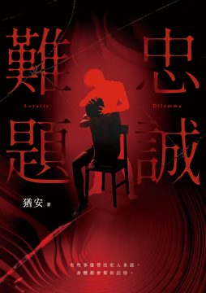

「老師你再不來我就自己處理」 ——收到訊息的那一晚，他上了頂樓；四天後，他卻能照常站上講臺。 ◤內容簡介◢ 臺北的夏夜，頂樓加蓋的鐵皮到半夜還在往屋裡散發著熱氣。陳建明爬上老公寓頂樓前最後一段水泥樓梯，手機上亮著那則沒有標點的訊息：「老師你再不來我就自己處理」。門裡沒有開燈，只有一股氣味從門縫滲漏出來。 他還有一通未接來電，是未婚妻四十分鐘前打的。 南陽街的補習班、中和沒有電梯的四樓套房、信義區的頂樓豪宅，五篇小說寫的都是大臺北的人。作者把時間打散了，埋進去一個謎題——有人在自己那一篇是主角，到了別人那一篇，只出現在旁人的回憶和照片裡。 依賴觸覺為生的按摩師只收現金，靠指腹就能辨識金額；每當走進每一個不同的房間，他最先感受到的，是甜美的氣味…… ◤本書看點◢ 〈餘溫的折痕〉｜先算十萬。 建明在南陽街教了快十年數學，準備要和交往多年的未婚妻訂婚。有次補習班離職的行政喝多了，說他有個朋友手法不錯，也不會多問私事。當他的第一次療程結束，他立刻說要預約長期的，一次付清十萬。這一行，大額一次付清通常只有兩種意思——兩種他都接過，但他不在乎是哪一種。 〈匿名者的洗禮〉｜第四個月，「你不用住那邊了。」 凱文二十九歲，做了四年男性體療師。五十六歲的國倫每週來一次，後來改約在旅館，最後讓他如願以償地搬進信義區的頂樓豪宅。國倫的太太長年住在臺南的老家，偶爾才回來。最近的那次是深夜，她進門的時候，凱文已經在自己的房間裡，仔細聽著走廊，好像有兩個人的腳步聲。 〈星形的侵略者〉｜七點半。現金一萬八。 下午四點二十七分，沒有大頭貼的帳號傳來忠孝東路四段的地址，連開場白都沒有。一萬八是平常收費的好幾倍。十一樓的門準時打開，開門的男人叫俊傑，眼白全是血絲。他照自己的規矩辦事。俊傑的眼睛卻一直看著他的背後，玄關那扇關著的門。 〈空轉的警報〉｜「像我這種的，兩個小時剛好。」 林森北路後巷的分租雅房只有三坪多，白天的按摩床晚上鋪條薄被，就是睡的地方。那一年他二十歲。新客人穿深藍色連帽外套，趴上床前說自己是第一次做這個、說巷口新開的麵包店、轉角的貓、被圍起來要拆的舊公寓，像重播一段新聞。之後連續幾個禮拜，每個週四晚上八點，他都準時報到。 〈止步的密室〉｜他封鎖過的人，換了新帳號。 陳建明想不起下一個數字。這幾個月，他的右手拇指只要空著，就會去搓食指側面，像在找一層已經不在的東西。補習班接到一通電話，對方問他禮拜幾上課、幾點下課，沒有留名字，聲音聽起來蠻年輕的。今天剛好是颱風夜，他和未婚妻的婚宴就在三個禮拜之後。 ◤名家推薦◢ 楊洵瑞x瑞瑞（作家）：「大腦可以編織無數個合理的藉口，身體卻記得那些殘留的記憶，為了藏好真正想藏的東西，所有人都學會對自己忠誠，然後裝作若無其事那般繼續過日子」。 賴特（作家）「在這座城市裡，人們未必有能力命名自己正在發生什麼，但他們的身體總是會比他們的意識早一點知道（甚至可以早一點忘掉）」。